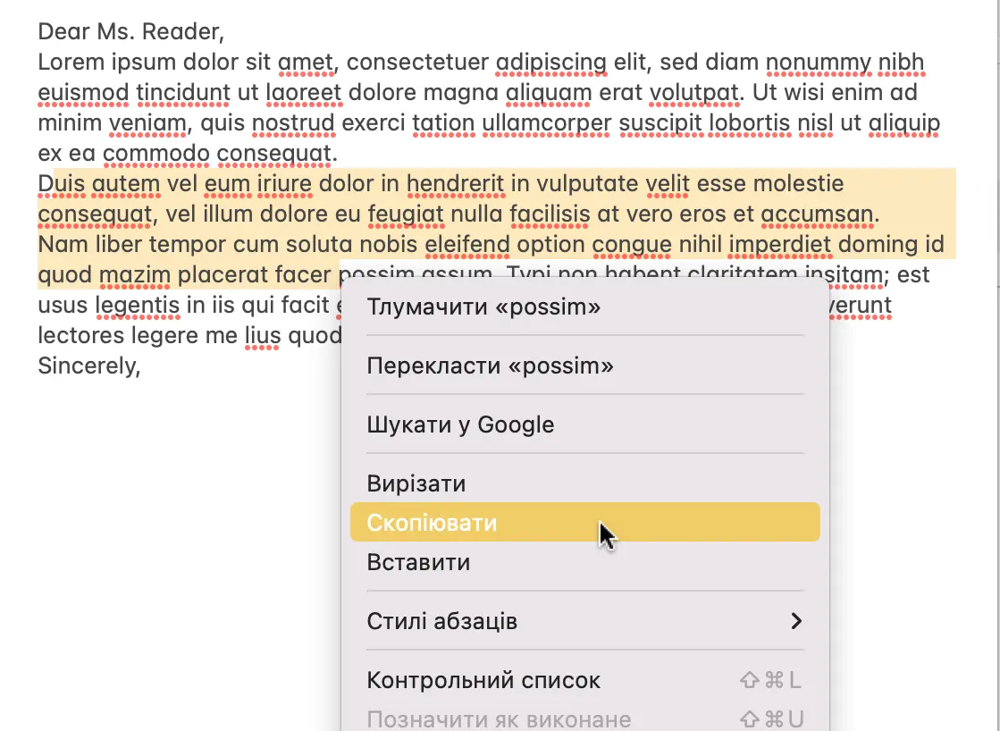
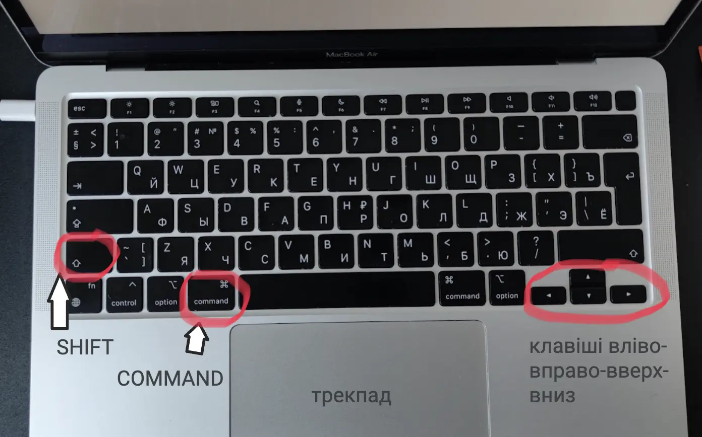

Просте виділення тексту за допомогою миші, тачпаду
Виділення тексту це базова задача при роботі з макбуком, яка точно знадобить кожному користувачу, тому варто розібратись як це робити. Незалежно від того, чи потрібно вам скопіювати текст у буфер обміну, видалити його чи відформатувати, усі ці дії вимагають правильного виділення тексту.
Щоб виділити текст на мак виконайте наступні кроки:
- Перемістіть курсор на початок тексту, який потрібно виділити(за допомогою трекпаду або за допомогою миші).
- При затиснутій кнопці миші текст виділяється при переміщенні курсора. Утримуючи кнопку миші або клікнувши сенсорну панель тачпаду, перемістіть курсор у кінець тексту, який потрібно виділити.
- Відпустіть кнопку миші або сенсорну панель тачпаду, коли ви виберете весь необхідний текст.
- Після виділення тексту натисніть правою кнопкою миші або двома пальцями на тачпаді та у меню оберіть "Скопіювати".
- Перемістіть курсор в місце куди треба вставати виділений текст. Натисніть правою кнопкою миші або двома пальцями на тачпаді та у меню оберіть "Вставити"
Ось і все! Тепер ви успішно виділили текст. Якщо вам потрібно виконати дію з виділеним текстом, наприклад скопіювати або вставити, ви можете ознайомитись з інструкцією за посиланням: як скопіювати/вставити текст на мак.

Виділення за допомогою клавіші SHIFT
Часто виділити необхідний відрізок тексту зручніше за допомогою клавіатури.
- Перемістіть курсор на початок або в кінець відрізку тексту для виділення.
- Затисніть клавішу SHIFT. Та за домомогою клавіш зі стрілками вліво-вправо-вверх-вниз можна обрати необхідну область виділення.
- Після виділення відпустіть клавішу SHIFT. Та за допомогою клавіш COMMAND C скопіюйте виділений текст.
- Перемістіть курсор в місце куди треба вставати виділений текст та за допомогою клавіш COMMAND V вставте виділений текст.

Відповіді на часті питання щодо виділення тексту на Mac:
Як швидко виділити одне слово в тексті?
Двічі клацніть на слово, щоб виділити його.
Як швидко виділити абзац в тексті?
Тричі клацніть будь-де в абзаці, щоб виділити весь абзац.
Як швидко виділити весь текст?
Щоб вибрати весь документ або веб-сторінку, натисніть клавіші Command + A на клавіатурі.
В деяких програмах (наприклад VS code) 4 кліки на тачпаді дозволяють виділити весь текст документу.
Як зменшити зону виділення тексту?
Іноді бувають ситуації коли треба виділити майже весь текст документу окрім деякої частини, в такому випадку можна виділити весь текст, а потім зменшити зону виділення. Якщо ви хочете скасувати виділення частини виділеного тексту, утримуйте клавішу Shift і клацніть на частині виділення, яку потрібно видалити.
Як виділити декілька частин тексту в документі?
Затисніть клавішу COMMAND та виділяйте декілька частин тексту (таке виділення може працювати не у всіх програмах або застосунках).
Підсумок
Завдяки цим простим крокам ви зможете виділяти текст на своєму Mac як професіонал. Незалежно від того, працюєте ви над документом чи переглядаєте веб-сторінки, знання того, як швидко й точно виділяти текст, є цінною навичкою, яка зрештою заощадить ваш час і збереже нерви:).